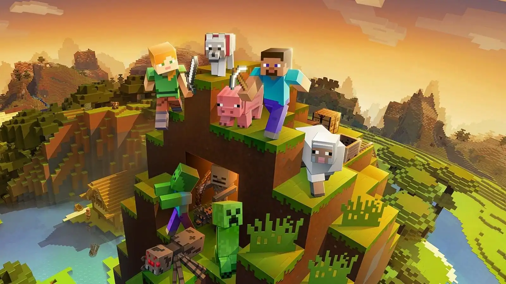
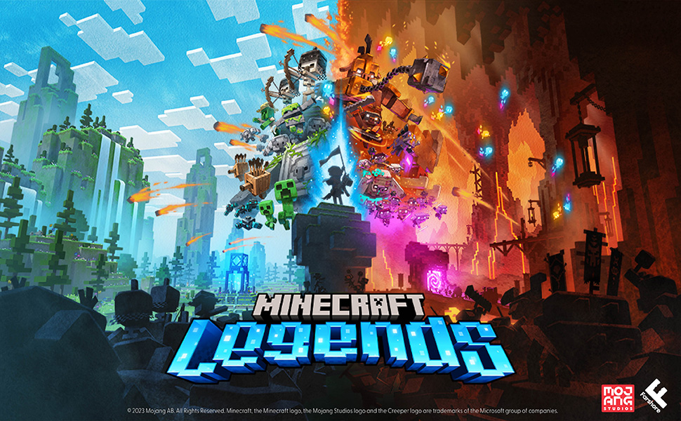

Jogos da Mojang Studios
Nesse site você verá todos os jogos da Mojang Studios.

Nesse site você verá todos os jogos da Mojang Studios.
O Minecraft nasceu em maio de 2009, quando o programador sueco Markus Persson (Notch) criou um protótipo simples chamado "Cave Game" em apenas um fim de semana, inspirado por jogos de construção e exploração como Infiniminer. O projeto evoluiu rapidamente para versões Alpha e Beta, ganhando uma base de fãs gigantesca antes mesmo do lançamento oficial, que ocorreu em 18 de novembro de 2011 durante a primeira Minecon. Com o sucesso estrondoso, Notch fundou a Mojang Studios, mas em 2014 decidiu vender a empresa e os direitos do jogo para a Microsoft por US$ 2,5 bilhões, afastando-se do desenvolvimento. Sob o comando da Microsoft e a liderança de Jens Bergensten (Jeb), o jogo expandiu para todas as plataformas possíveis, recebeu atualizações massivas que transformaram o mundo subaquático, as vilas e as cavernas, e se tornou o videogame mais vendido da história, ultrapassando 350 milhões de cópias. Mais do que um jogo, Minecraft transformou-se em uma ferramenta educacional e um fenômeno cultural no YouTube, mantendo sua relevância ao permitir que cada jogador crie sua própria narrativa dentro de um universo infinito de blocos.

Idealizado por Jakob Porsér (JahKob) e Markus Persson (Notch). O jogo combina cartas colecionáveis com táticas de tabuleiro. Após uma longa disputa judicial com a Bethesda pelo nome "Scrolls", o jogo foi lançado e, anos depois, renomeado para Caller's Bane, tornando-se um projeto gratuito gerido pela comunidade.

Uma parceria narrativa entre a Mojang e a Telltale Games. O projeto foi liderado por nomes como Kevin Bruner e Dan Connors da Telltale. Diferente do jogo original, ele é focado em escolhas e episódios, contando a história de Jesse em uma jornada épica para derrotar o lendário Wither Storm.

Desenvolvido pela Oxeye Game Studio, co-fundada por Jens Bergensten (Jeb), Daniel Brynolf (dbp) e Pontus Hammarberg (koda). Foi o primeiro jogo publicado pela Mojang que não foi criado inteiramente dentro do estúdio. É um jogo de plataforma e ação focado em combate tático e movimentos em câmera lenta.

Um jogo de estratégia minimalista e rápido criado inteiramente por um único funcionário da Mojang, o artista Henrik Pettersson (Carnalizer). Foi lançado de surpresa e gratuitamente no Steam, desafiando os jogadores a conquistarem territórios e gerenciarem recursos de forma ágil.

Jogo de realidade aumentada para dispositivos móveis, liderado por Torsten Szabo e Agnes Larsson (LadyAgnes). O objetivo era fundir o mundo real com construções de Minecraft usando o celular. Devido às restrições globais de locomoção em 2020/2021, o jogo foi descontinuado oficialmente em junho de 2021.

Um RPG de ação no estilo dungeon crawler desenvolvido pela equipe da Mojang em Estocolmo. O diretor criativo do projeto foi Mans Olson, contando com a colaboração de Double Eleven. A história gira em torno de Archie, o Arch-Illager, que após ser rejeitado por sua aldeia, encontra o "Orbe do Domínio" e inicia uma campanha de tirania que o jogador deve deter.

Um jogo de estratégia em tempo real e ação desenvolvido pela Mojang Studios em conjunto com a Blackbird Interactive. No jogo, o herói deve liderar os habitantes do Overworld contra uma invasão de Piglins vindos do Nether. O desenvolvimento teve supervisão de Craig Leigh (Ledski) e Magnus Nedfors.
